01
FOTTO
Suas fotos na Fotto
Encontre suas imagens do evento e escolha seus registros favoritos.
ACESSAR GALERIA26 JUL 2026 • SETE LAGOAS, MG
O Circuito Sete Lagoas reuniu esporte, família e comunidade em uma manhã inesquecível no Condomínio Jardim da Serra.
Um dia marcado por energia, superação, integração e muitos sorrisos no Condomínio Jardim da Serra.
Cada largada, cada chegada e cada passo fizeram parte de uma experiência especial para atletas, famílias, crianças e todos que viveram esse momento com a gente.
A RB Eventos Esportivos agradece a presença de todos os participantes, parceiros, patrocinadores e equipe envolvida na realização dessa 1ª etapa.
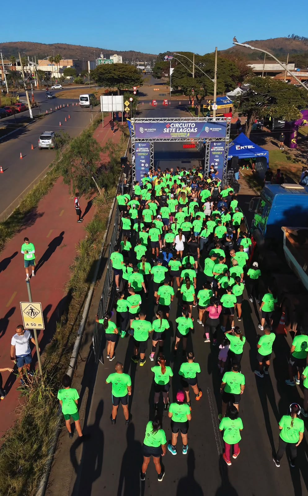
A energia antes da largada tomou conta de Sete Lagoas.
Do primeiro passo ao pódio, cada imagem conta um pedaço dessa história.
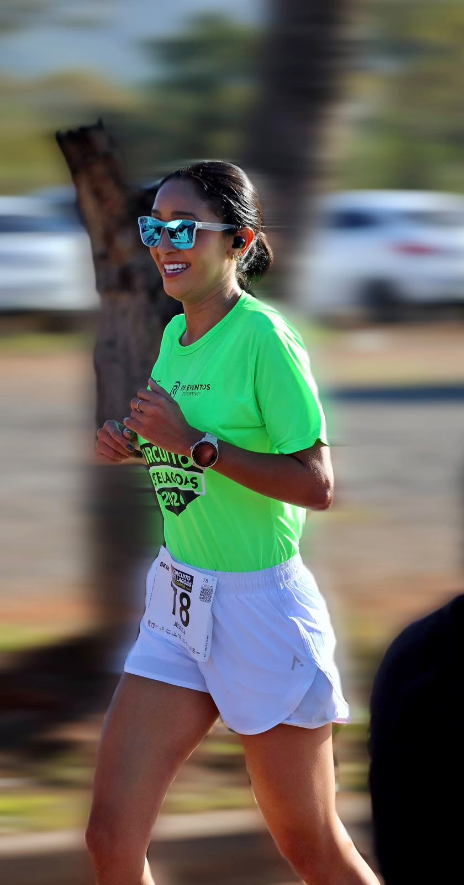
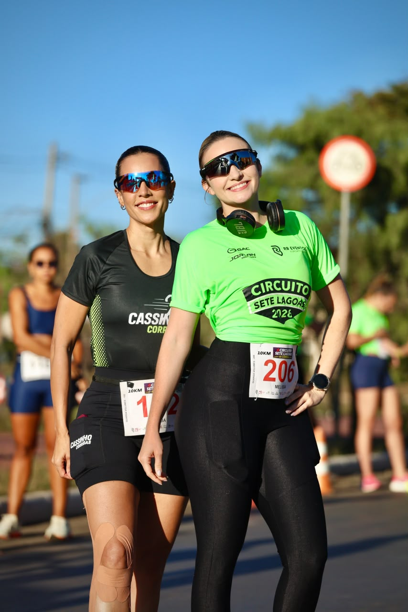
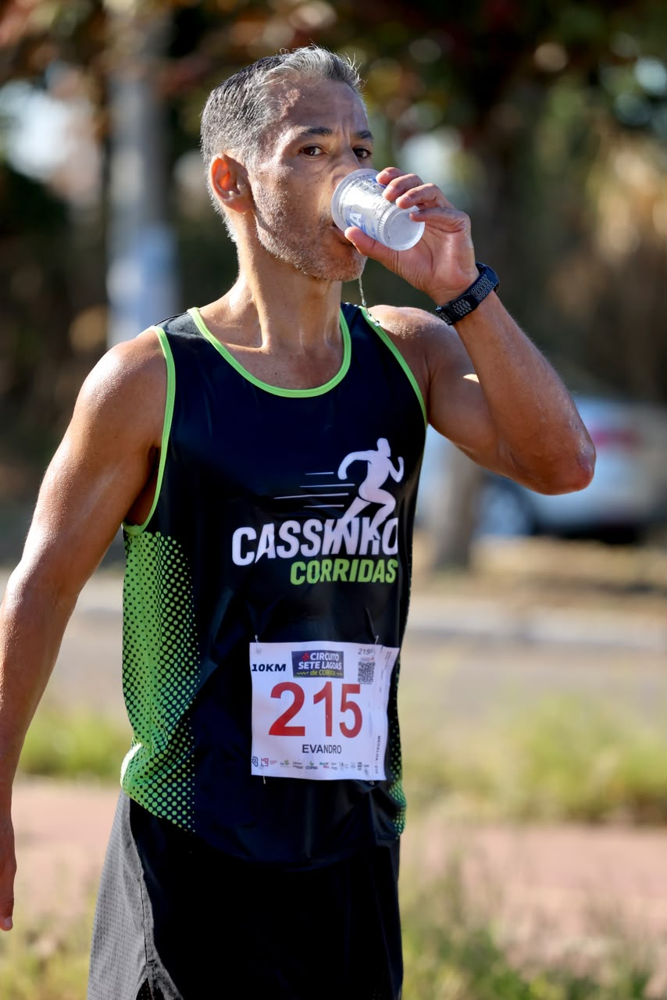
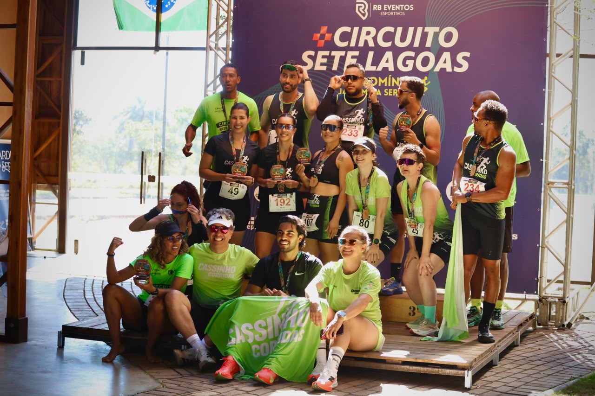
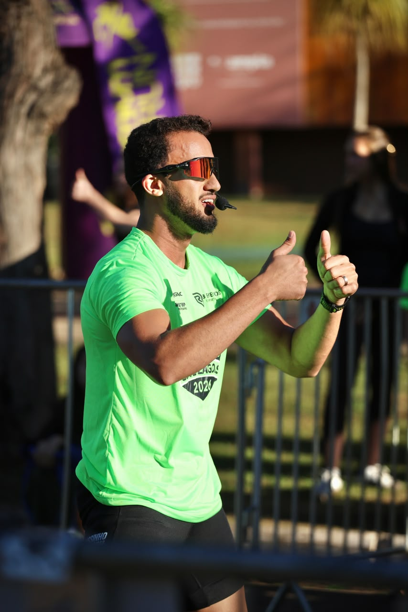
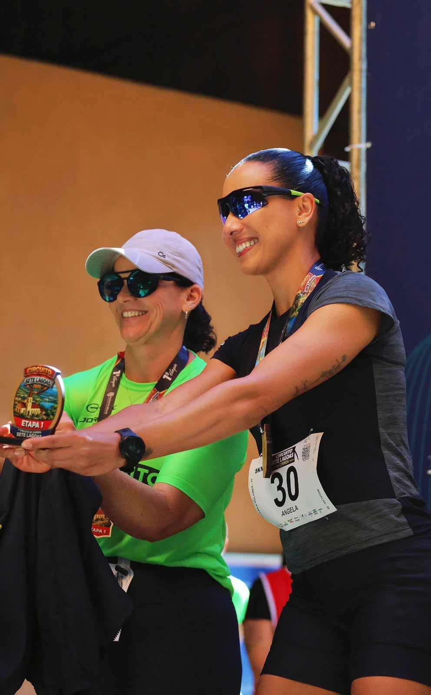
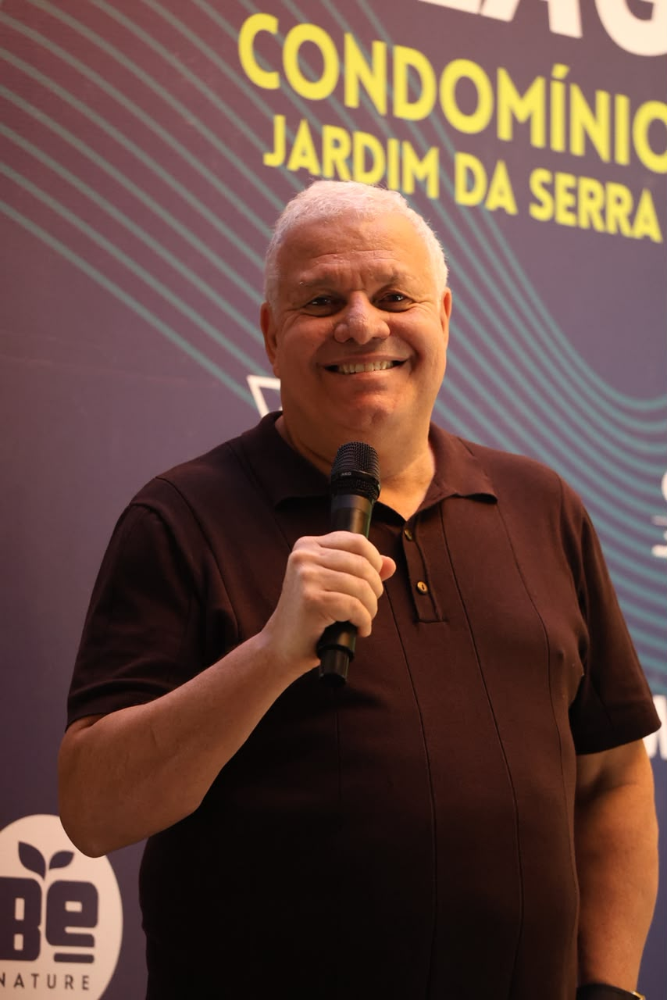
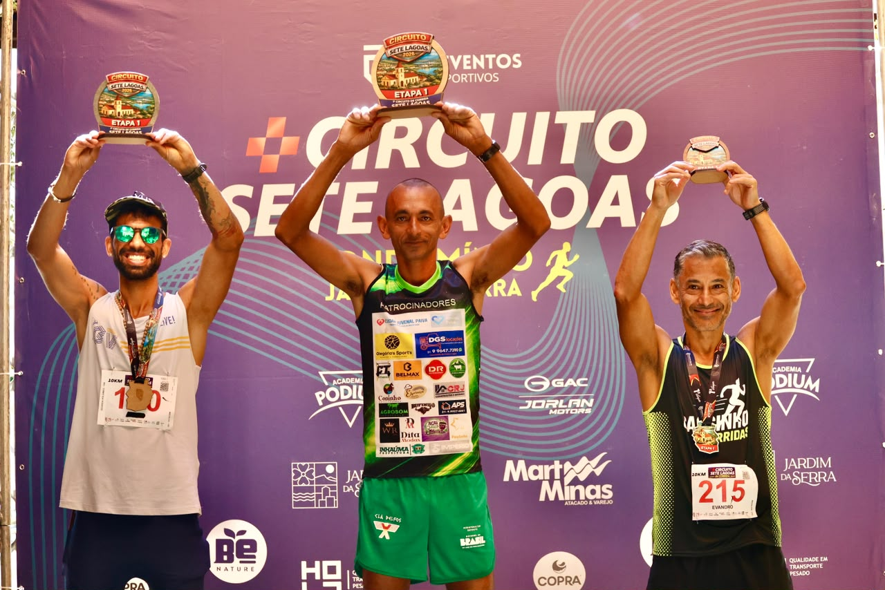
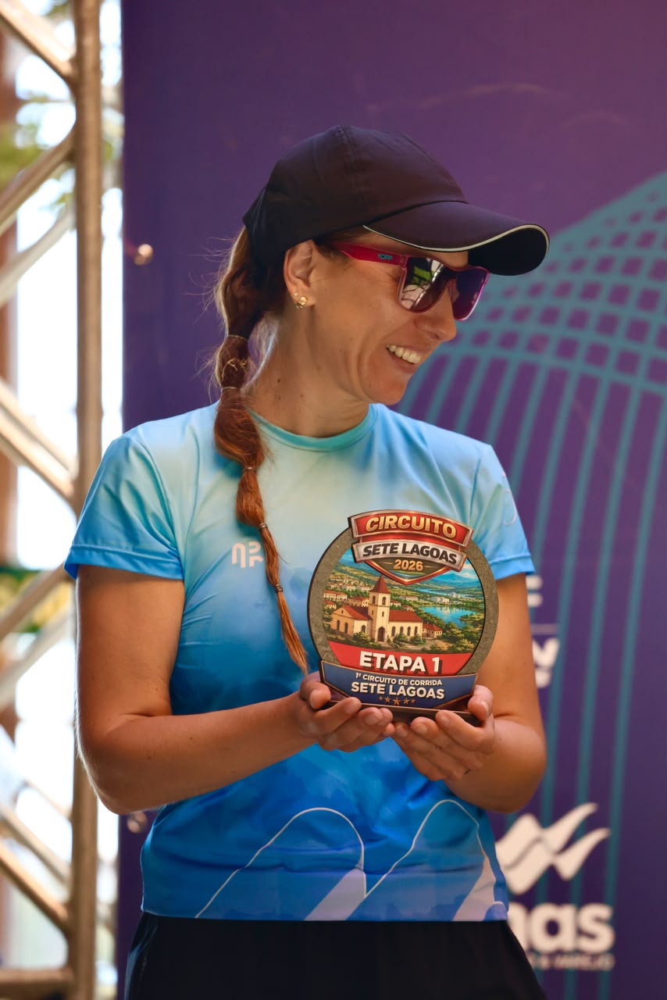
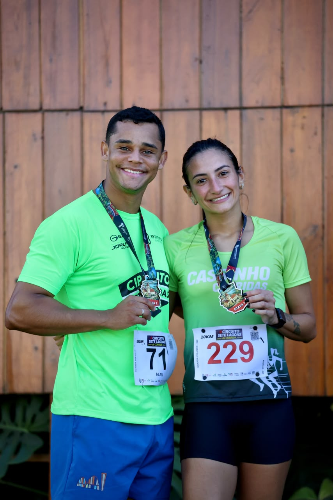
Dê o play e reviva a largada, as chegadas e toda a emoção da 1ª etapa do Circuito Sete Lagoas.
Acesse as galerias dos fotógrafos oficiais, encontre seus melhores momentos e leve essa conquista com você.
Encontre suas imagens do evento e escolha seus registros favoritos.
ACESSAR GALERIABusque seus registros da prova na galeria oficial do evento.
ACESSAR GALERIA